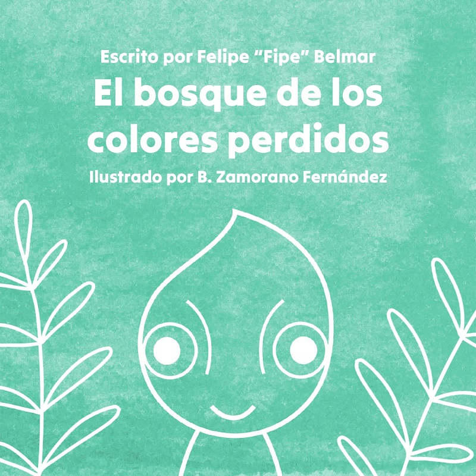

Descripción del proyecto
Este libro infantil fue diseñado y escrito con el enfoque de despertar la imaginación y la curiosidad de los más pequeños. Pensado para ser visualmente atractivo y accesible en cada detalle, desde la selección tipográfica hasta la disposición de las ilustraciones, fue planeado no solo para brindan un aspecto suave y agradable, sino que también ayudan a crear un espacio seguro y acogedor para los lectores de temprana edad.
Tiempo de desarrollo
2 meses
Cliente
Felipe "Fipe" Belmar
¿Necesitas un diseño parecido a este?
ContáctameTecnologías utilizadas
Más sobre este proyecto en
